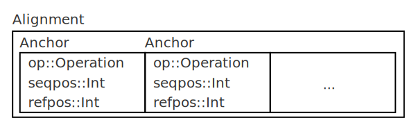

Alignment representation
Overview
Types related to alignment representation introduced in this chapter are indispensable concepts to use this package. Specifically, Alignment, AlignmentAnchor and Operation are the most fundamental types of this package to represent an alignment of two sequences.
Representing alignments
The Alignment type can represent a wide variety of global or local sequence alignments while facilitating efficient coordinate transformation. Alignments are always relative to a possibly unspecified reference sequence and represent a series of edit operations performed on that reference to transform it to the query sequence. An edit operation is, for example, matching, insertion, or deletion. All operations defined in BioAlignments.jl are described in the Alignment operations section.
To represent an alignment we use a series of "anchors" stored in the AlignmentAnchor type. Anchors are form of run-length encoding alignment operations, but rather than store an operation along with a length, we store the end-point of that operation in both reference and query coordinates.
struct AlignmentAnchor
seqpos::Int
refpos::Int
op::Operation
endThe next figure shows a schematic representation of an alignment object.

Every alignment starts with a special OP_START operation which is used to give the position in the reference and query prior to the start of the alignment, or 0, if the alignment starts at position 1.
For example, consider the following alignment:
0 4 9 12 15 19
| | | | | |
query: TGGC----ATCATTTAACG---CAAG
reference: AGGGTGGCATTTATCAG---ACGTTTCGAGAC
| | | | | | |
4 8 12 17 20 23 27Using anchors we would represent this as the following series of anchors:
[
AlignmentAnchor( 0, 4, OP_START),
AlignmentAnchor( 4, 8, OP_MATCH),
AlignmentAnchor( 4, 12, OP_DELETE),
AlignmentAnchor( 9, 17, OP_MATCH),
AlignmentAnchor(12, 17, OP_INSERT),
AlignmentAnchor(15, 20, OP_MATCH),
AlignmentAnchor(15, 23, OP_DELETE),
AlignmentAnchor(19, 27, OP_MATCH),
]An Alignment object can be created from a series of anchors:
julia> Alignment([
AlignmentAnchor(0, 4, OP_START),
AlignmentAnchor(4, 8, OP_MATCH),
AlignmentAnchor(4, 12, OP_DELETE)
])
BioAlignments.Alignment:
aligned range:
seq: 0-4
ref: 4-12
CIGAR string: 4M4DAlignment operations
Alignment operations follow closely from those used in the SAM/BAM format and are stored in the Operation bitstype.
| Operation | Operation Type | Description |
|---|---|---|
OP_MATCH | match | non-specific match |
OP_INSERT | insert | insertion into reference sequence |
OP_DELETE | delete | deletion from reference sequence |
OP_SKIP | delete | (typically long) deletion from the reference, e.g. due to RNA splicing |
OP_SOFT_CLIP | insert | sequence removed from the beginning or end of the query sequence but stored |
OP_HARD_CLIP | insert | sequence removed from the beginning or end of the query sequence and not stored |
OP_PAD | special | not currently supported, but present for SAM/BAM compatibility |
OP_SEQ_MATCH | match | match operation with matching sequence positions |
OP_SEQ_MISMATCH | match | match operation with mismatching sequence positions |
OP_BACK | special | not currently supported, but present for SAM/BAM compatibility |
OP_START | special | indicate the start of an alignment within the reference and query sequence |
Each operation has its own one-letter representation, which is the same as those defined in the SAM file format.
julia> convert(Operation, 'M') # Char => Operation
OP_MATCH
julia> convert(Char, OP_MATCH) # Operation => Char
'M': ASCII/Unicode U+004d (category Lu: Letter, uppercase)
julia> ismatchop(OP_MATCH)
true
See the Operations section in the references for more details.
Aligned sequences
A sequence aligned to another sequence is represented by the AlignedSequence type, which is a pair of the aligned sequence and an Alignment object.
The following example creates an aligned sequence object from a sequence and an alignment:
julia> AlignedSequence( # pass an Alignment object
dna"ACGTAT",
Alignment([
AlignmentAnchor(0, 0, OP_START),
AlignmentAnchor(3, 3, OP_MATCH),
AlignmentAnchor(6, 3, OP_INSERT)
])
)
···---
ACGTAT
julia> AlignedSequence( # or pass a vector of anchors
dna"ACGTAT",
[
AlignmentAnchor(0, 0, OP_START),
AlignmentAnchor(3, 3, OP_MATCH),
AlignmentAnchor(6, 3, OP_INSERT)
]
)
···---
ACGTAT
If you already have an aligned sequence with gap symbols, it can be converted to an AlignedSequence object by passing a reference sequence with it:
julia> seq = dna"ACGT--AAT--"
11nt DNA Sequence:
ACGT--AAT--
julia> ref = dna"ACGTTTAT-GG"
11nt DNA Sequence:
ACGTTTAT-GG
julia> AlignedSequence(seq, ref)
········-··
ACGT--AAT--